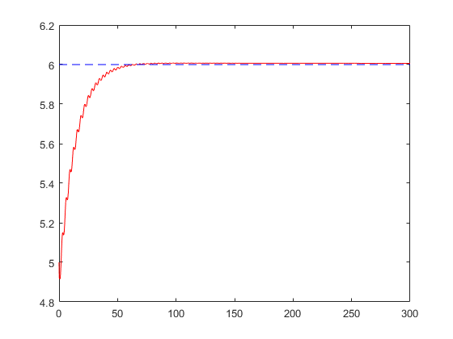

Contents
clc;
close all;
clear all;
FOr getting the model for Y, i did the following derivation
x0 = [0.1,0.1, 8, 2.5,5];
tf = 300;
global I mgd fv
I = 7.5;
mgd = 6;
fv = 1.5;
options = odeset('RelTol',1e-4,'AbsTol',[1e-4, 1e-4, 1e-4, 1e-4,1e-4]);
[T,X] = ode45(@(t,x)passAdapControl(t,x),[0 tf],x0, options);
figure('Name','Theta under Passive Adaptive Control');
plot(T, X(:,1),'r');
hold on
plot(T, -sin(T),'b--');
figure('Name','Theta dot under Passive Adaptive Control');
plot(T, X(:,2),'r');
hold on
plot(T, -cos(T),'b--');
figure('Name','I_bar under Passive Adaptive Control');
plot(T, X(:,3),'r');
hold on
plot(T, I*ones(size(T,1),1),'b--');
figure('Name','fv_bar under Passive Adaptive Control');
plot(T, X(:,4),'r');
hold on
plot(T, fv*ones(size(T,1),1),'b--');
figure('Name','mgd_bar under Passive Adaptive Control');
plot(T, X(:,5),'r');
hold on
plot(T, mgd*ones(size(T,1),1),'b--');
function [tau] = Tau(q,q_d,dq,dq_d,ddq_d)
Kv = 2500;
e = q - q_d;
e_d = dq - dq_d;
lamda = 2.1;
global a v r m_bar c_bar n_bar
a = ddq_d - lamda*e_d;
v = dq_d - lamda *e;
r = e_d +lamda * e;
tau = m_bar*a + c_bar*v + n_bar -Kv*r;
end
function [dx] = passAdapControl(t,x)
q_d = -sin(t);
dq_d = -cos(t);
ddq_d = sin(t);
q = x(1,1);
dq = x(2,1);
global I mgd fv m_bar c_bar n_bar a v r
M = I;
C = fv;
N = mgd*sin(q);
m_bar = x(3,1);
c_bar = x(4,1);
n_bar = x(5,1)*sin(q);
tau = Tau(q,q_d,dq,dq_d,ddq_d);
P = 0.005*eye(3);
dx=zeros(5,1);
dx(1) = x(2);
dx(2) = -inv(M)*(C*x(2) + N - tau);
Y = [a, v, sin(q)];
dx(3:5) = -inv(P)*transpose(Y)*r;
end
